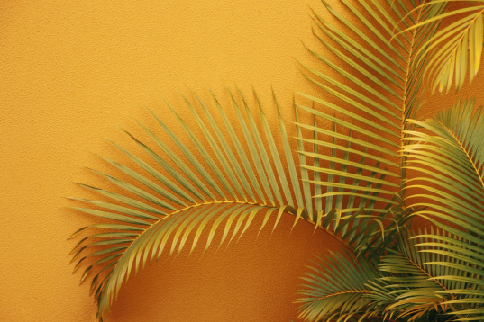

Oceans


Octopus punches fish in the head (just because it can)
Octopuses sometimes partner with fish to hunt, but the partnership comes with risks (for the fish, that is).

Newfound marine blob looks like 'party balloon' with two strings, scientists say
This is the first species NOAA scientists have ever discovered from video footage alone.

Swarm of eels breaks record
Before we start mining for precious metals in the darkness of the deep sea, we might try switching on the light first and observing our surroundings.

Mantis shrimp punch down
Home-stealers fought the hardest for smaller-than-ideal dens.
Megalodon's hugeness
Even among its extinct relatives, Megalodon was unequalled in length and mass.
Adorable sunfish
Sunfish in the Molidae family are among the biggest fish in the world.
Massive 'Darth Vader' sea bug
The newly described species is one of the biggest isopods known to science.
Scientists capture the world's deepest octopus
The octopus was found miles beneath the ocean surface.